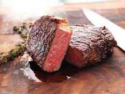

Steaks

Description
Is there anything more classic and perfect than a simple pan-seared steak?
If there is I sure haven't found it.
We'll teach you how to make the perfect pan-seared steak at home.
Ingredients
- Thick cut steak (ribeye or New York strip)
- Neutral oil, such as canola or vegetable oil
- Salt
- Pepper
Steps
- Generously salt and pepper all sides of the steaks
- Pre-heat pan until the Leidenfrost effect takes place
- Add enough oil to coat the pan and heat until beginnging to smoke
- Add steaks to pan
- Flip continuously until a golden brown crust forms and center reaches 125 degrees
- Let rest for approximately 10 minutes